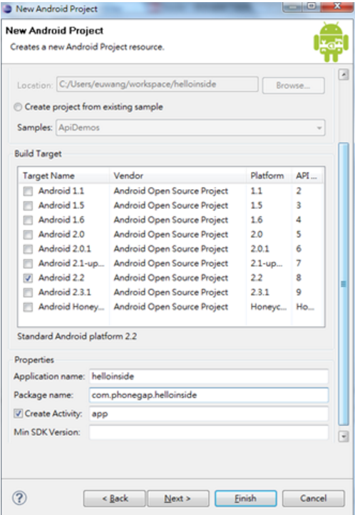
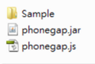
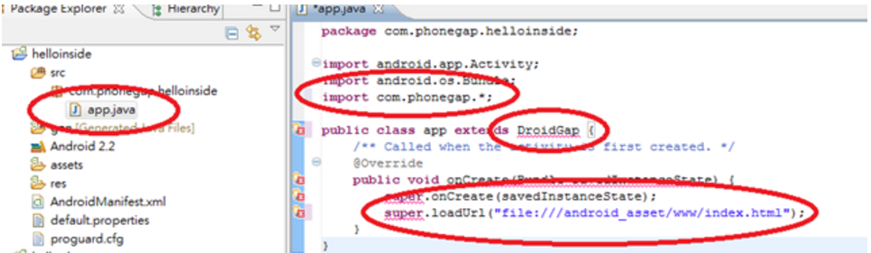
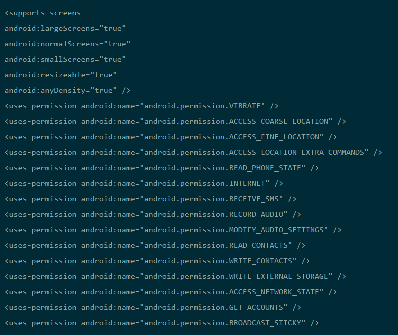
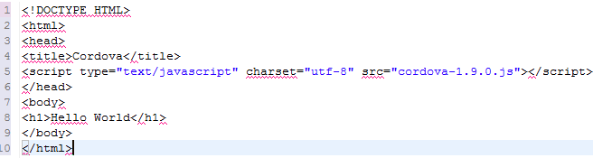

Phonegap

認識Phonegap
PhoneGap是一個跨平台行動開發解決方案，它把行動網頁的介面包成像原生軟體一樣。可以用寫網頁的方式寫App。
首先進入Phonegap的下載網頁。
下載之後進行安裝

建立一個專案本文以 [helloinside]為名稱，分別輸入專案的屬性為
Application name：helloinside
Package name：com.phonegap.helloinside
Create Activity：app
再選擇一個需要的Android版本

接著在你建立Android的workspace的根目錄，新增二個目錄
/libs
/assets/www

在Eclipse裡展開專案，並點開[src] –> [com.phonegap.helloinside] –> [app.java] 並執行以下步驟：
把Class extends 名稱從Activity 改成 DroidGap
把最後一行的setContentView(R.layout.main);改成 super.loadUrl(file:///android_asset/www/index.html);
在程式碼上方加入 Add import com.phonegap.*;
右鍵點選專案中的AndroidManifest.xml，並選擇Open With -> Text Editor，接著把以下的程式碼都複製到android:versionName="1.0″>後面

存檔後，一個phonegap 的開發環境就完成了。
3
